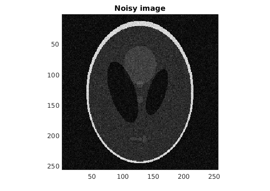
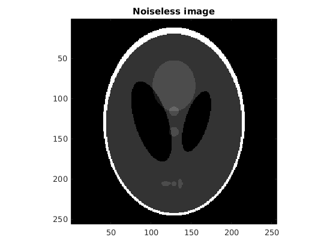
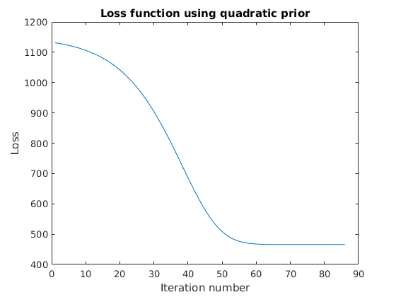
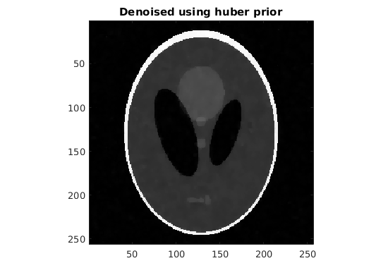
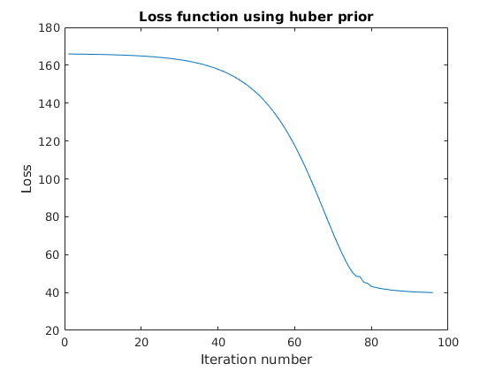
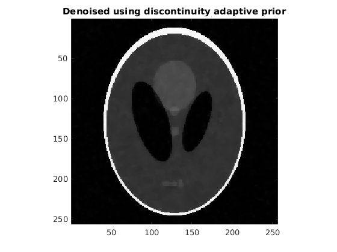
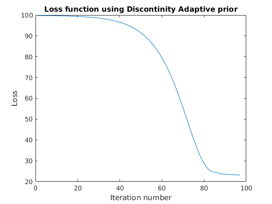

Contents
tic;
load('../data/assignmentImageDenoisingPhantom.mat');
myNumOfColors = 200;
myColorScale = [ [0:1/(myNumOfColors-1):1]' , [0:1/(myNumOfColors-1):1]', [0:1/(myNumOfColors-1):1]' ];
nImage = abs(imageNoisy);
figure;
imagesc(nImage);
colormap(myColorScale);
daspect ([1 1 1]);
axis tight;
title('Noisy image');
figure;
imagesc(imageNoiseless);
colormap(myColorScale);
daspect ([1 1 1]);
axis tight;
title('Noiseless image');
fprintf('RRMSE between noisy and noiseless images %f\n', RRMSE(imageNoiseless, imageNoisy));
RRMSE between noisy and noiseless images 0.298579
 
Quadratic loss
alpha = 0.82;
gamma = 0;
for alph = [0.8*alpha, min(1, 1.2*alpha), alpha],
[image_quad, loss_quad] = denoise(imageNoisy, alph, 1, 'q', gamma);
fprintf('RRMSE for quadratic prior = %f for alpha = %f\n', RRMSE(imageNoiseless, image_quad), alph);
end
figure;
imagesc(abs(image_quad));
colormap(myColorScale);
daspect ([1 1 1]);
axis tight;
title('Denoised using quadratic prior');
figure;
plot(loss_quad);
title('Loss function using quadratic prior');
xlabel('Iteration number');
ylabel('Loss');
RRMSE for quadratic prior = 0.260790 for alpha = 0.656000
RRMSE for quadratic prior = 0.267301 for alpha = 0.984000
RRMSE for quadratic prior = 0.216311 for alpha = 0.820000

Huber loss
alpha = 0.052;
gamma = 0.006;
for alph = [0.8, 1.2, 1]
[image_huber, loss_huber] = denoise(imageNoisy, alph*alpha, 1, 'h', gamma);
fprintf('RRMSE for huber prior = %f for alpha = %f, gamma = %f\n', RRMSE(imageNoiseless, image_huber), alph*alpha, gamma);
end
for gam = [0.8, 1.2, 1]
[image_huber, loss_huber] = denoise(imageNoisy, alpha, 1, 'h', gam*gamma);
fprintf('RRMSE for huber prior = %f for alpha = %f, gamma = %f\n', RRMSE(imageNoiseless, image_huber), alpha, gam*gamma);
end
figure;
imagesc(abs(image_huber));
colormap(myColorScale);
daspect ([1 1 1]);
axis tight;
title('Denoised using huber prior');
figure;
plot(loss_huber);
title('Loss function using huber prior');
xlabel('Iteration number');
ylabel('Loss');
RRMSE for huber prior = 0.058586 for alpha = 0.041600, gamma = 0.006000
RRMSE for huber prior = 0.059160 for alpha = 0.062400, gamma = 0.006000
RRMSE for huber prior = 0.058436 for alpha = 0.052000, gamma = 0.006000
RRMSE for huber prior = 0.061053 for alpha = 0.052000, gamma = 0.004800
RRMSE for huber prior = 0.059416 for alpha = 0.052000, gamma = 0.007200
RRMSE for huber prior = 0.058436 for alpha = 0.052000, gamma = 0.006000
 
discontinuity adaptive loss
alpha = 0.027926;
gamma = 0.003840;
for alph = [0.8, 1.2, 1]
[image_adap, loss_adap] = denoise(imageNoisy, alph*alpha, 1, 'd', gamma);
fprintf('RRMSE for Discontinity Adaptive prior = %f for alpha = %f, gamma = %f\n', ...
RRMSE(imageNoiseless, image_adap), alph*alpha, gamma);
end
for gam = [0.8, 1.2, 1]
[image_adap, loss_adap] = denoise(imageNoisy, alpha, 1, 'd', gam*gamma);
fprintf('RRMSE for Discontinity Adaptive prior = %f for alpha = %f, gamma = %f\n', ...
RRMSE(imageNoiseless, image_adap), alpha, gam*gamma);
end
figure;
imagesc(abs(image_adap));
colormap(myColorScale);
daspect ([1 1 1]);
axis tight;
title('Denoised using discontinuity adaptive prior');
figure;
plot(loss_adap);
title('Loss function using Discontinity Adaptive prior');
xlabel('Iteration number');
ylabel('Loss');
RRMSE for Discontinity Adaptive prior = 0.064275 for alpha = 0.022341, gamma = 0.003840
RRMSE for Discontinity Adaptive prior = 0.064224 for alpha = 0.033511, gamma = 0.003840
RRMSE for Discontinity Adaptive prior = 0.064124 for alpha = 0.027926, gamma = 0.003840
RRMSE for Discontinity Adaptive prior = 0.064900 for alpha = 0.027926, gamma = 0.003072
RRMSE for Discontinity Adaptive prior = 0.065392 for alpha = 0.027926, gamma = 0.004608
RRMSE for Discontinity Adaptive prior = 0.064124 for alpha = 0.027926, gamma = 0.003840
 
Results
fprintf('Minimum loss with quadratic prior: %f\n', loss_quad(size(loss_quad, 1)));
fprintf('Minimum loss with Huber prior: %f\n', loss_huber(size(loss_huber, 1)));
fprintf('Minimum loss with discontinuity adaptive prior: %f\n', loss_adap(size(loss_adap, 1)));
toc;
Minimum loss with quadratic prior: 465.797717
Minimum loss with Huber prior: 39.964946
Minimum loss with discontinuity adaptive prior: 23.229338
Elapsed time is 19.401759 seconds.